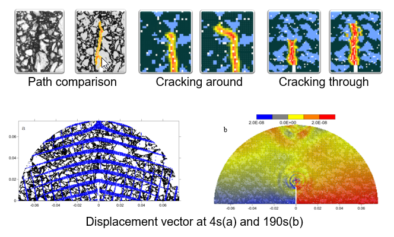
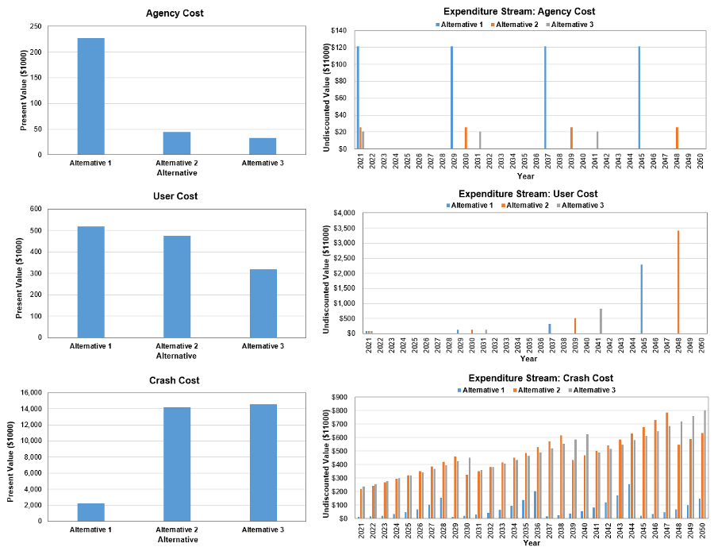
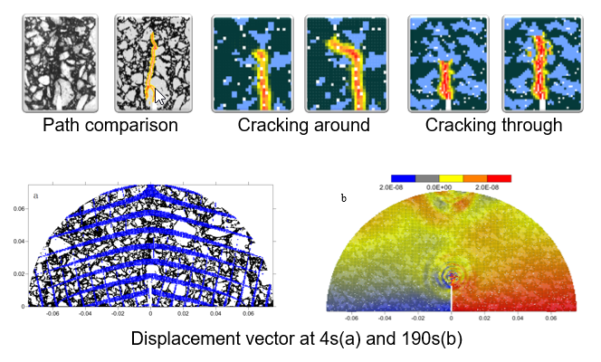
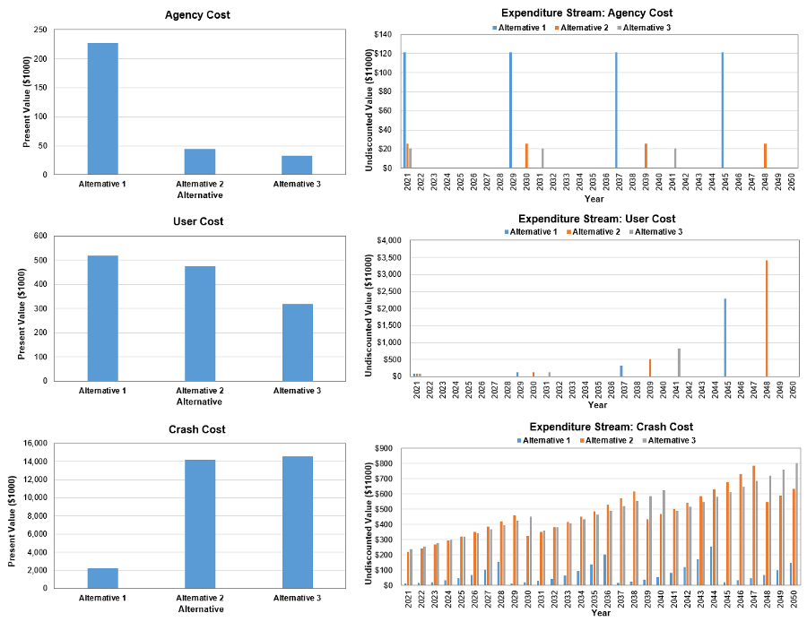

Peridynamics Simulation
This project simulated the low-temperature cracking of SCB specimens.

Safety Costs Calculator
A spreadsheet was developed to compare the agency, user, and safety costs of different alternatives.


This project simulated the low-temperature cracking of SCB specimens.

A spreadsheet was developed to compare the agency, user, and safety costs of different alternatives.
